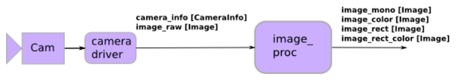

image_pipeline
- http://wiki.ros.org/image_pipeline
- It fills the gap between getting raw images from a camera driver and higher-level vision processing.
- It has collection of packages which includes:
- camera_calibration
- depth_image_proc
- image_proc
- image_publisher
- image_rotate
- image_view
- stereo_image_proc
Generic camera node
- In ROS, camera is also defined as a node which gives the raw images.
- Generic camera node is defined by following parameters:
Published Topics
- image_raw (sensor_msgs/Image)
The unprocessed image data.
- camera_info (sensor_msgs/CameraInfo)
Contains the camera calibration (if calibrated) and extra data about the camera configuration.
Services
- set_camera_info (sensor_msgs/SetCameraInfo)
Used by camera_calibration to save the calibration parameters.
Moreover
- 'stereo_image_proc' has runtime-configurable stereo processing parameters of its own
- rqt_reconfigure is useful for tweaking configuration to get best results
Camera Frame Vs Optical Frame
- Camera Frame or Camera Link is where actual camera sits and take picture from.
- Optical Frame is where Camera publishes the picture it have taken
- This is necessary because, picture that camera takes has coordinate convention like in computer monitors. That is:
- x-axis = form left to right
- y-axis = from top to bottom
- z-axis = towards the screen/scene
- This can be seen in above diagram
- Hence we need to define new frame/link which similar convention and publish all images in that frame.
- In this picture, the odd one frame at top is optical frame.

Defining Optical Frame:
<joint name="camera_joint" type="fixed">
<origin xyz="0.15 0 0.15" rpy="0 0 0"/>
<parent link="base_link"/>
<child link="camera_link"/>
</joint>
<link name="camera_link">
....
</link>
<joint name="camera_optical_joint" type="fixed">
<origin xyz="0 0 0" rpy="${-pi/2} 0 ${-pi/2}"/>
<parent link="camera_link"/>
<child link="camera_link_optical"/>
</joint>
<link name="camera_optical_link"/>
<gazebo reference="camera_link">
<sensor type="camera" name="camera">
...
<camera name="head">
...
</camera>
<plugin name="camera_controller" filename="libgazebo_ros_camera.so">
...
<cameraName> mono_bot </cameraName>
<imageTopicName> image_raw </imageTopicName>
<cameraInfoTopicName> camera_info </cameraInfoTopicName>
<frameName> camera_optical_link </frameName>
...
</plugin>
</sensor>
</gazebo>
'camera_calibration' package
'image_proc' package
- See: image_proc
- This package will remove camera distortion.
- i.e Takes raw images and gives rectified images.
- If necessary, will convert Bayer or YUV422 format image data to color image.

'image_view' package
- See: image_view
-
Viewing single image:
rosrun image_view image_view image:=<image topic>
eg:
rosrun image_view image_view image:=/camera/image
-
Viewing stereo image:
rosrun image_view stereo_view stereo:=<stereo namespace> image:=<image topic identifier>
eg:
rosrun image_view stereo_view stereo:=/my_stereo_cam image:=image_rect_color